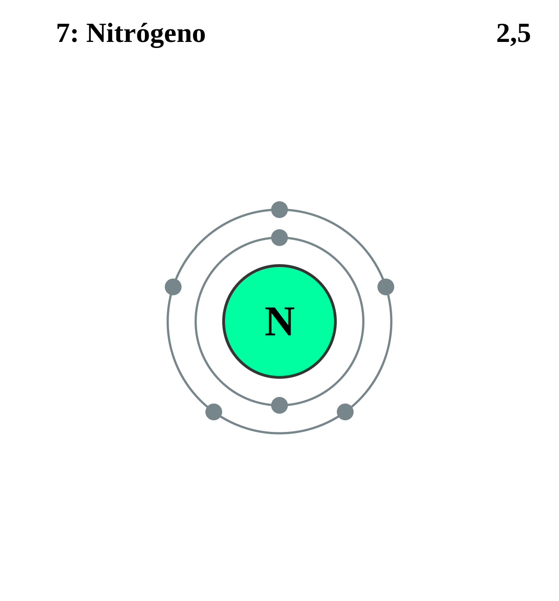

|
|
||
|
NITROGENO El nitrógeno es incoloro e inodoro, tanto en su forma gaseosa como líquida, y el gas de nitrógeno (N2). Sus compuestos se encuentran en materiales orgánicos y fertilizantes, venenos y explosivos. El ciclo del nitrógeno es un proceso fundamental en la naturaleza para los organismos vivos. Aunque el gas nitrógeno es relativamente inerte, las bacterias en el suelo pueden convertir o reducir el nitrógeno a una forma que las plantas pueden utilizar para formar proteínas. |
 |
DATOS Número Atómico: 7 Peso Atómico: 14.01 Electronegatividad: 3.04 Configuración Electrónica: [He]2s22p3 Estados de Oxidación: -3 No. de Electrones de Valencia: 5 |